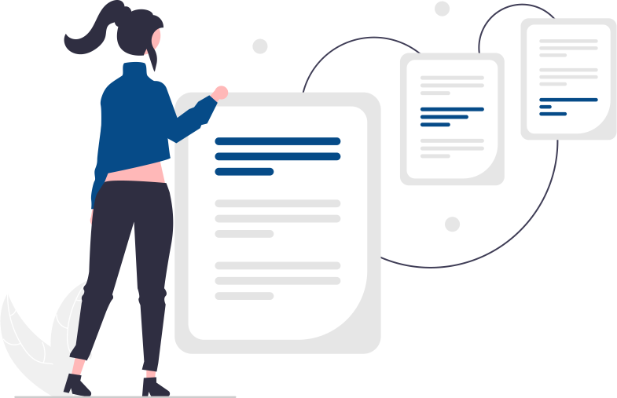
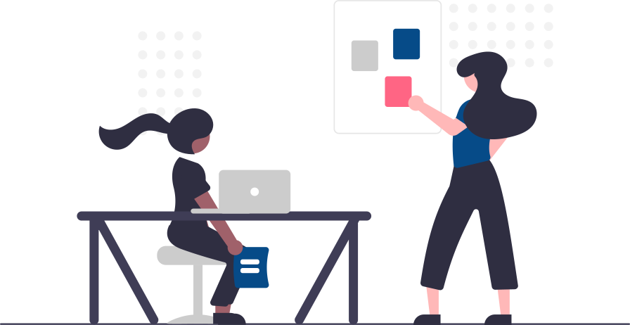

Event Creation Dashboard for Citi
*Due to NDA, cannot attach any screenshots
Summary:
Worked with Citi's Capital markets business unit, as a UX Engineer/technology analyst focused on front end
design and development. The goal was to develop a dashboard which would consolidate 5 screen
functionalities into a single one. I was involved in the designing, development and user
research processes. Maximum work was development in Typescript.

Challenge:
Details
Length: 6 months (corporate project)
Role: Developer, designer and researcher
Team : 1 frontend designer+developer, 1 manager, 1 backend developer
Context
During my second year at Citi I was give the task to design and develop the dashboard of a global trade application which would be used internally by Citi in all countries. Our goal was to simplify the then complicated functionalities including 4+ workflows and screens into a single dashboard.
Current product evaluation:
The first thing I did was get a deep understanding of the functional flow of current dashboard.
- Issues:
- Complicated process to navigate, involves opening up multiple screens on click
- Unclear display of data in tables, long scroll times, data that can be grouped together, shown separately.
- Causing cognitive overload to the users of the system.
- Code redundancy for multiple screens
Approach:
User Research

The users for this dashboard were a fixed set of people, representing a bigger set of user. These users were already chosen by our stakeholders using a screener.
Based on the interviews with the users, we figured their need to be as-
Brainstorming session

I sketched a few views for what the dashboard could look like while including all the necessary functionalities.

Outcome:
Development
Based on the sketches and multiple meetings with the users, we formed a generalised idea of what should be included in dashboard.
- As the frontend programmer on this project, I could anticipate the feasibility of any design we thought of.
- The coding and deployment portion took a few months during which for each new change we took feedback from the user on its visual and functional aspect.
- We followed the agile methodology for development. We also had to follow the brand's color palette which restricted our use of any color.
- Collaborated with users and developrers from different parts of the world.
User Acceptance Testing
This is the last phase of development, where users of the software test the product/technnology and we record and correct any defects. It’s the closest thing to a “real world” test available. It gives users the chance to interact with the software and find out if everything works as it should after considering the features, miscommunicated, not communicated, and so on.
The feedback from the users was then incorporated in the dashboard in an agile manner.
Final product
The final dashboard fulfilled all the requirements of the users, the stakeholders as well as was easy and convenient to use. It is now hosted on Citi's internal network and is being used my many users all over the world.
I was assigned to be a front-end developer for this project but I also carried out tasks of a UX researcher/designer to some extent, to make it into a beautiful, user friendly and efficient experience.
Challenges faced
- Since there was no UX designer involved, I, as a developer had to play the role of understanding user requirements, designing the interaction as well as developing them.
- As a developer, it became tough to convince the user of the feasibility of their demands.
- Due to different timezomes, it was possible to connect with the entire team only once during the day. If anything new came up, we had to wait an entire day to get in touch with them.